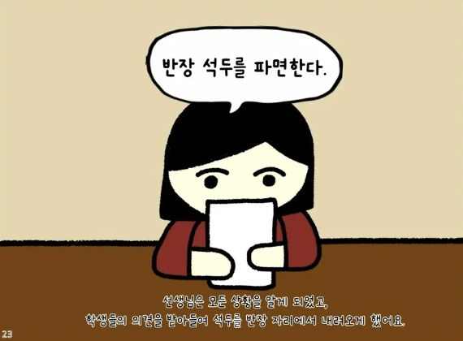

온세미컨덕터코리아
현 ONSEMI
2020.03 ~ 2023.03 · F/MET / Operator
- 웨이퍼 알루미늄·티타늄 증착
- 웨이퍼 세정
- 웨이퍼 식각
설비운영ENDURACETOSCMP
현 ONSEMI
2020.03 ~ 2023.03 · F/MET / Operator
현 인천중앙여자고등학교
2017.03 ~ 2020.01 · 회계정보과
도서관이 좋아서 문헌정보학과에 왔습니다.
대학 입학 후 졸업까지의 모든 활동입니다.
2025.09.13 ~ 2025.12.13
캐나다 캘거리 · 영어 어학연수
2024.01.06 ~ 2024.02.17
필리핀 바콜로드 · 영어 어학연수
2024.06 ~ 2025.08
동아리 자금 운영 및 관리
대학 행사 부스 운영 및 기획, 진행
동아리 MT 기획 및 진행
청년문화 개선 프로젝트 사업 진행
2024.04 ~ 현재
안심도서관
고산도서관
사월책문화센터
무학숲도서관 책&숲 축제
2025 대구교육청 공공도서관 축제
2026 대구교육청 공공도서관 축제
2023.03 ~ 2025.08
뜨개 굿즈 제작 및 판매
대학 축제 부스 운영
2026.11.03
2025.07.31
발표 자료 · MoDU : 민주주의와 연대의 움직임
🔇 음성은 재생되지 않아요.
캐릭터 스케치
그림책 원화 전시
한겨레 시사·칼럼 [똑똑! 한국사회] 지면 수록 - 김현정 작가님

“그러니까 반성 좀 하시라고요”
‘대구는 무서운 곳이니 조심해라.’ 한 지인에게서 농담 섞인 문자가 날아왔다. 혹시 모르니 그곳에선 말조심하라는 당부다. 대구의 한 대학에 특강을 가게 되었노라고 주변에 알린 직후였다. 장난인 줄 알면서도 슬며시 뒤통수가 당겼다.
칼럼 읽기 ↗2024.05
2023.06.13
2026.01.12 ~ 2026.01.30
대구대학교 학술정보원
도서관주간 행사 계획
북큐레이션 목록 작성 및 포스터 제작
대출 반납 업무
2025.03 ~ 2025.06
대구대학교 학술정보원 사회과학 및 문학 자료실
교양도서 100선 목록 포스터 제작
카드목록함 전시 포스터 제작
교양도서 100선 목록 포스터
카드목록함 전시 포스터
2024.12 ~ 2025.02
대구대학교 학술정보원 사회과학 및 문학 자료실
2024.09 ~ 2024.12
대구대학교 학술정보원 사회과학 및 문학 자료실
2024.09.27
대구대학교 학술정보원
2024.06 ~ 2024.08
대구대학교 학술정보원 사회과학 및 문학 자료실
2024.06 ~ 2024.07
경산이노베이션
2026.10.26 ~ 2026.10.30
행사장 안내, 등록데스크 지원, 행사 운영 지원 등
2023.10.26 ~ 2023.12.08
지역연계 프로그램 기획 및 진행
달서구 노인복지센터 [텔로미어를 증진시키자!] 기획 및 진행
달서구 노인종합복지관 상시 모집 봉사활동과 독거노인 마음잇기 사업 홍보 포스터 제작
전공 지식을 실제 결과물로 만든 작업입니다.
영상을 불러오지 못했어요
잠시 후 다시 시도해 주세요.
[어떤 자료를 수집하고, 어떤 메타데이터 체계로 정리했는지, 결과는 무엇이었는지 2~3줄로 적어 주세요.]
[조사 대상·방법(설문, 인터뷰)과 분석 결과, 제안한 개선안을 적어 주세요.]
[전 직장 경험을 살려 기업 문서 분류·보존 체계를 설계한 과정 등을 적어 주세요.]